Bayesian Linear Regression

Why Linear Regression: A Simple Statistical Golem
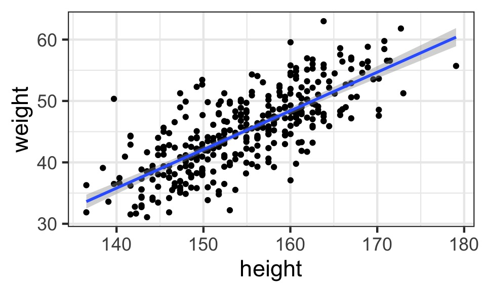
- Describes association between predictor and response
- Response is additive combination of predictor(s)
- Constant variance
Why should we be wary of linear regression?
- Approximate
- Not mechanistic
- Often deployed without thought
- But, often very accurate
Why a Normal Error Distribution
- Good descriptor of sum of many small errors
- True for many different distributions
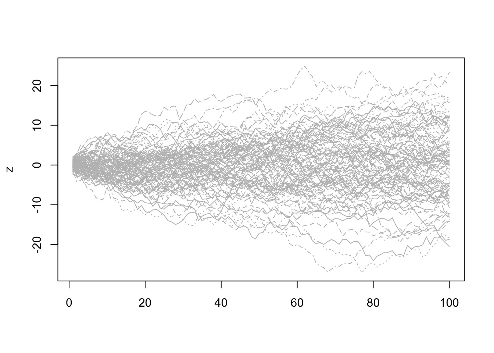
Why a Normal Error Distribution
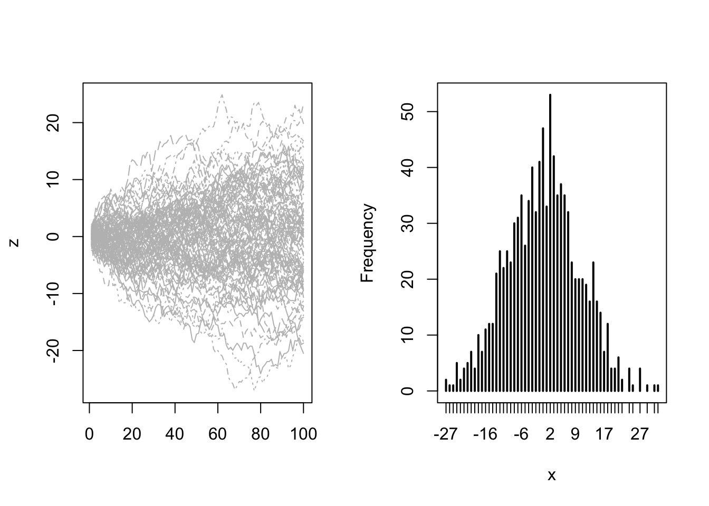
Try it
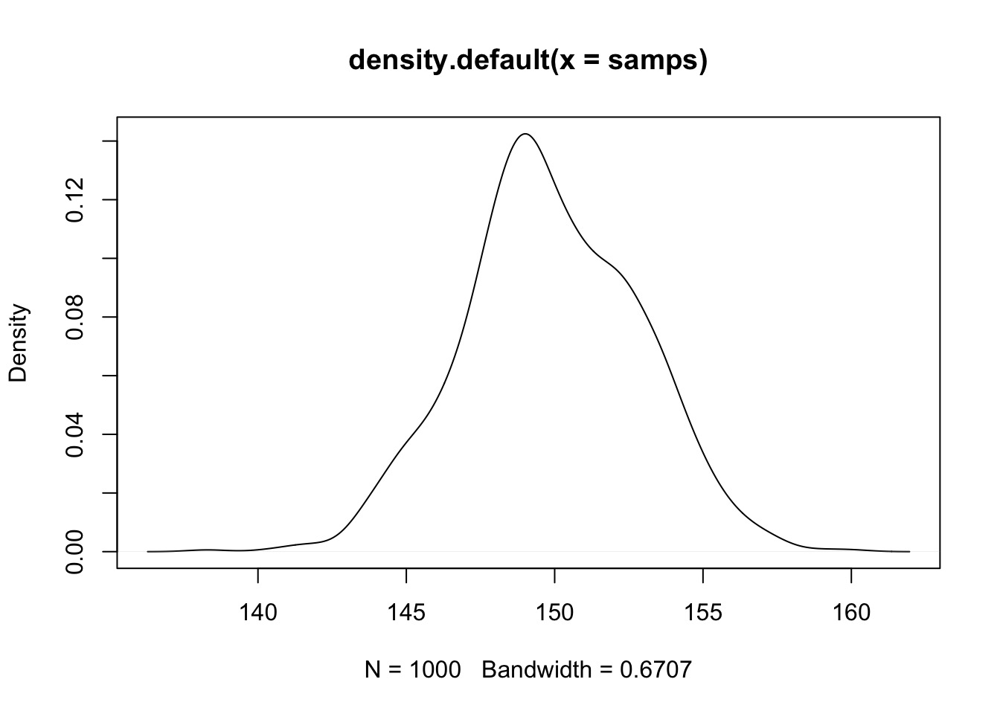
- Ask the carriers to put my milage on
- Upgrades - you do it through united.com
- Go to star alliance upgrade award section -
Flexible to Many distributions
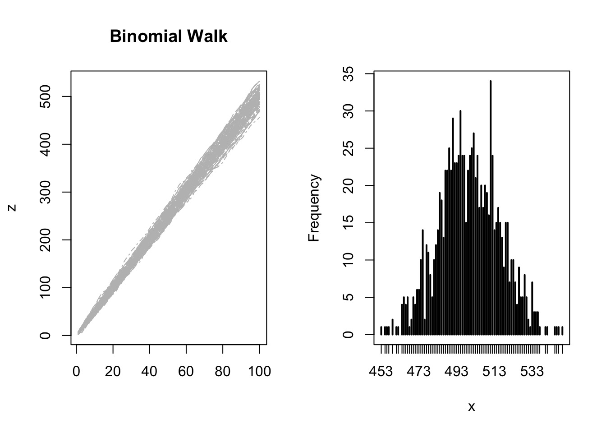
Try it: the Central Limit Theorem
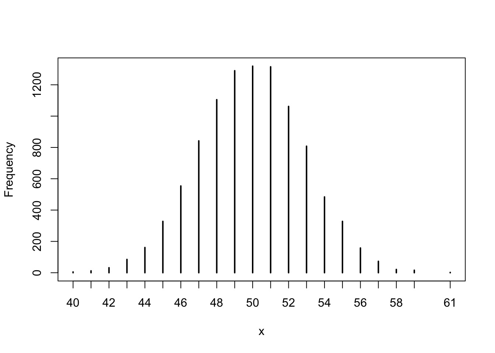
So, how do we build models?
- Identify response
- Determine likelihood (distribution of error of response)
- Write equation(s) describing generation of predicted values
- Assign priors to parameters
Our Previous Model
Likelihood:\(w \sim Binomial(6, size=9, prob = prob)\)
Prior:
\(prob \sim Uniform(0,1)\)
A Normal Model
Likelihood:\(y_i \sim Normal(\mu, \sigma)\)
Prior:
\(\mu \sim Normal(0,1000)\)
\(\sigma \sim U(0,50)\)
A Model of a Mean from the !Kung San

What does the data look like?
Mean StdDev |0.89 0.89|
height 154.60 7.74 142.24 166.37
weight 44.99 6.46 35.47 56.02
age 41.14 15.97 18.00 64.00
male 0.47 0.50 0.00 1.00Our Model of Height
Likelihood:\(h_i \sim Normal(\mu, \sigma)\)
Prior:
\(\mu \sim Normal(150, 20)\) From the data
\(\sigma \sim U(0,50)\) Wide range of possibilities
Priors
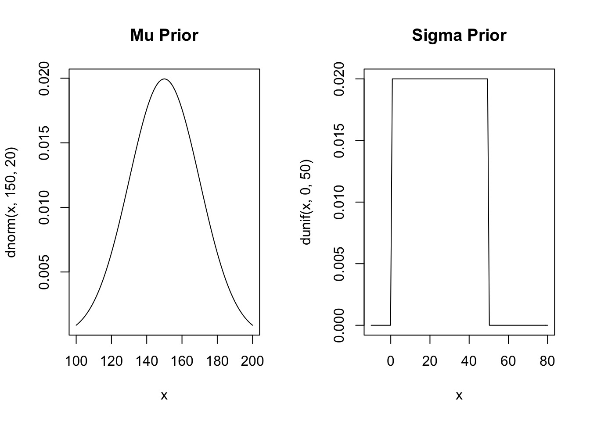
Prior Predictive Simulation
- Are your priors any good?
- Simulate from them to generate fake data
- Does simulated data look realistic?
- Does simulated data at least fall in the range of your data?
Example:
Prior:
\(\mu \sim Normal(150, 20)\) From the data
\(\sigma \sim U(0,50)\) Wide range of possibilities
Reasonable? Giants and Negative People?
Prior:
\(\mu \sim Normal(150, 20)\) From the data
\(\sigma \sim U(0,50)\) Wide range of possibilities
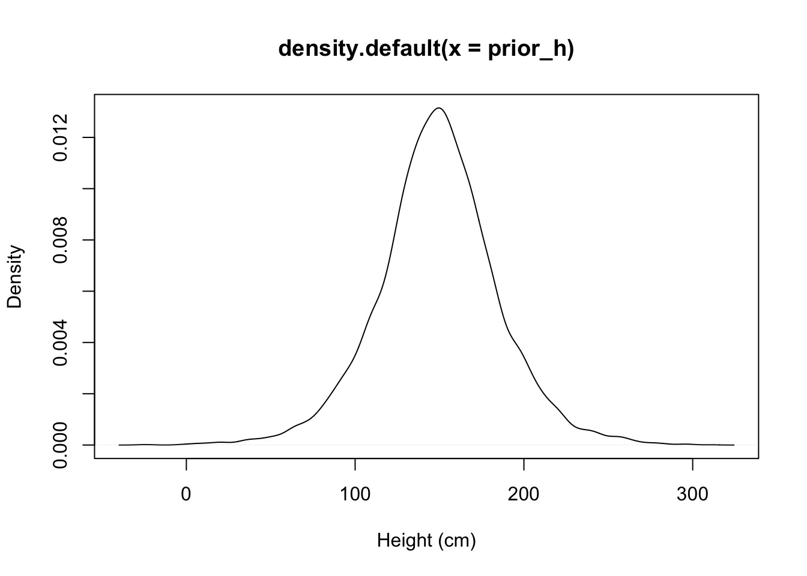
Grid Sampling
# Make the grid
grid <- crossing(mu = seq(140, 160, length.out=200),
sigma = seq(4, 9, length.out=200)) %>%
#Calculate the log-likelihoods for each row
group_by(1:n()) %>%
mutate(log_lik = sum(dnorm(Howell1_Adult$height, mu, sigma, log=TRUE))) %>%
ungroup() %>%
# Use these and our posteriors to get the numerator
# of Bayes theorem
mutate(numerator = log_lik +
dnorm(mu, 150, 20, log=TRUE) +
dunif(sigma, 0,50, log=TRUE)) %>%
#Now calculate the posterior (approximate)
mutate(posterior = exp(numerator - max(numerator)))Grid Sampling
Grid Sampling
Grid Sampling
# Make the grid
grid <- crossing(mu = seq(140, 160, length.out=200),
sigma = seq(4, 9, length.out=200)) %>%
#Calculate the log-likelihoods for each row
group_by(1:n()) %>%
mutate(log_lik = sum(dnorm(Howell1_Adult$height, mu, sigma, log=TRUE))) %>%
ungroup() %>%
# Use these and our posteriors to get the numerator
# of Bayes theorem
mutate(numerator = log_lik +
dnorm(mu, 150, 20, log=TRUE) +
dunif(sigma, 0,50, log=TRUE)) %>%Grid Sampling
# Make the grid
grid <- crossing(mu = seq(140, 160, length.out=200),
sigma = seq(4, 9, length.out=200)) %>%
#Calculate the log-likelihoods for each row
group_by(1:n()) %>%
mutate(log_lik = sum(dnorm(Howell1_Adult$height, mu, sigma, log=TRUE))) %>%
ungroup() %>%
# Use these and our posteriors to get the numerator
# of Bayes theorem
mutate(numerator = log_lik +
dnorm(mu, 150, 20, log=TRUE) +
dunif(sigma, 0,50, log=TRUE)) %>%
#Now calculate the posterior (approximate)
mutate(posterior = exp(numerator - max(numerator)))Posterior

Posterior from a Sample
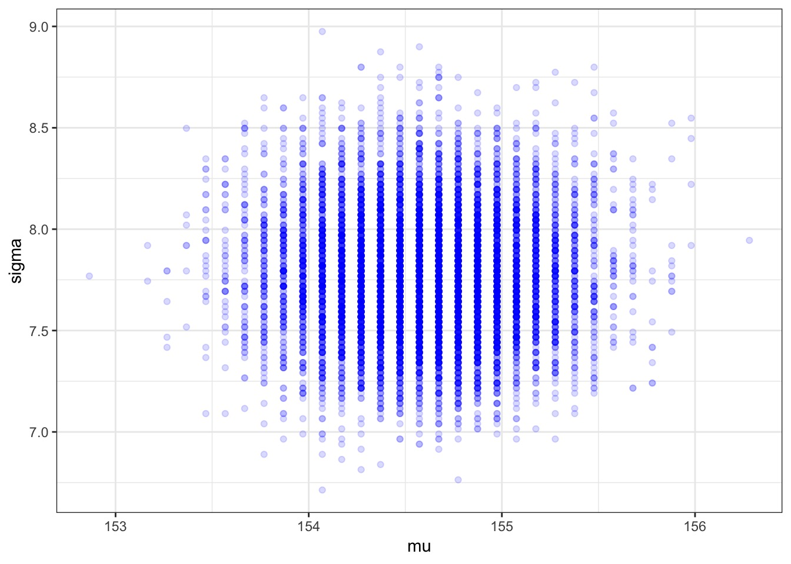
Or, let’s Reconceptualize With a Model
Likelihood:\(h_i \sim Normal(\mu, \sigma)\)
height ~ dnorm(mu, sigma)Prior:
\(\mu \sim Normal(150, 20)\) mu ~ dnorm(150, 200)
\(\sigma \sim U(0,50)\) sigma ~ dunif(0,50)
Building Models using rethinking: The alist Object
Building Models using rethinking: The alist Object
Feed the Model to Maximum A Posterior Approximation
- Uses optimization algorithms
- Same algorithms as likelihood
Compare map to grid
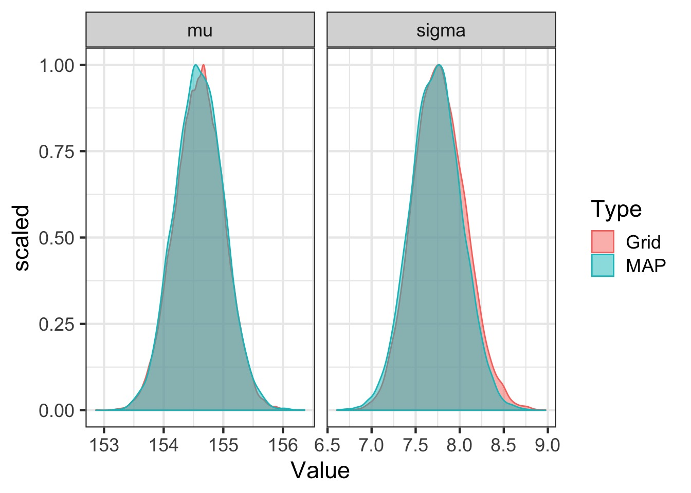
Adding a Predictor
- Identify response (height)
- Determine likelihood (distribution of error of response)
- Write equation(s) describing generation of predicted values
- Weight predicts height
- Weight predicts height
- Assign priors to parameters
- Check priors with simulation
The Mean Changes with predictor: A Linear Model!
Likelihood:
\(h_i \sim Normal(\mu_i, \sigma)\)
Data Generating Process
\(\mu_i = \alpha + \beta x_i\)
Prior:
\(\alpha \sim Normal(178, 100)\) Reasonable Range from data
\(\beta \sim Normal(0, 10)\) Weakly Informative
\(\sigma \sim U(0,50)\) Wide range of possibilities
When in doubt, simulate it out!
[1] 31.07105 62.99259When in doubt, simulate it out!
When in doubt, simulate it out!
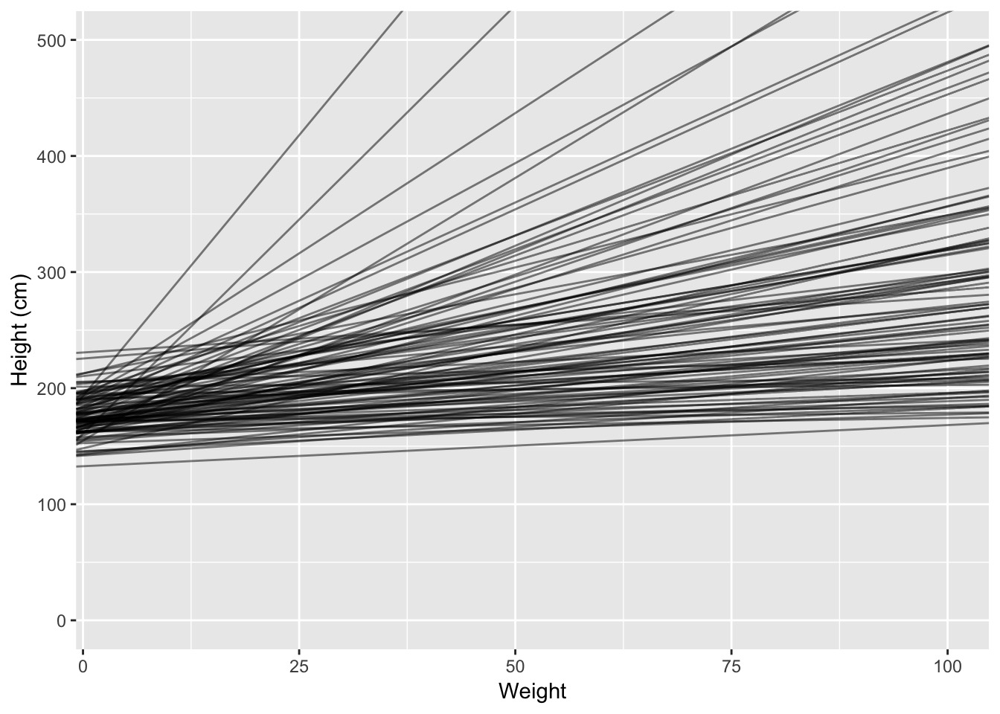 Eh?
Rethinking our Priors!
Try a log-normal to guaruntee a positive value!
[1] 7.208450 -3.946306 9.826626 -14.043020 8.002034 -7.507425
[7] -17.869624 6.412382 -7.564241 6.945962 [1] 2.8380974 0.8909155 0.2886832 0.1285018 1.1239655 1.4806061 0.8809009
[8] 0.7026157 3.6836816 0.4159838Simulate it out!
Our Linear Model
The fit
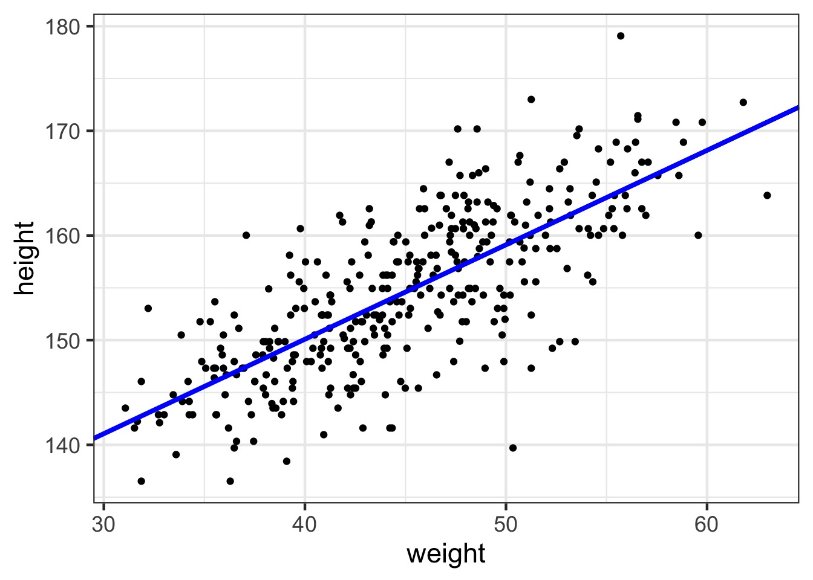
So, what do we do with a fit model?
- Evaluate model assumptions
- Evaluate model estimates and meaning
- Assess uncertainty in fit
- Assess uncertainty in prediction
Sampling from the Posterior Predictions
We use link to extract from the link (prediction) function:
[1] 10000 352QQ, etc…
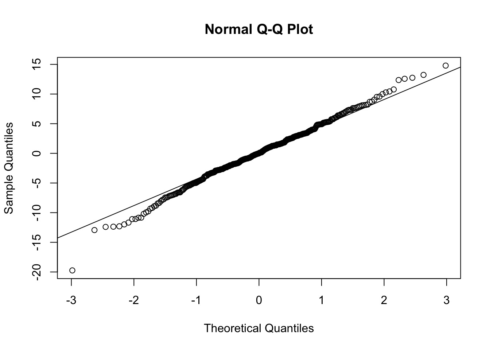
Observed - Fitted
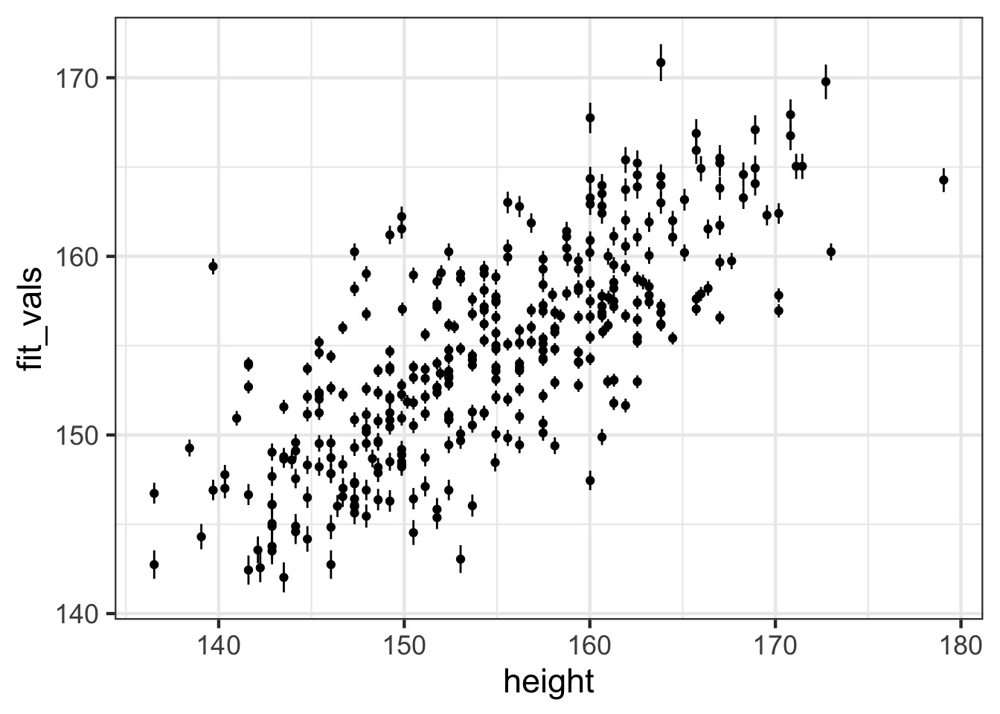
Fit-Residual
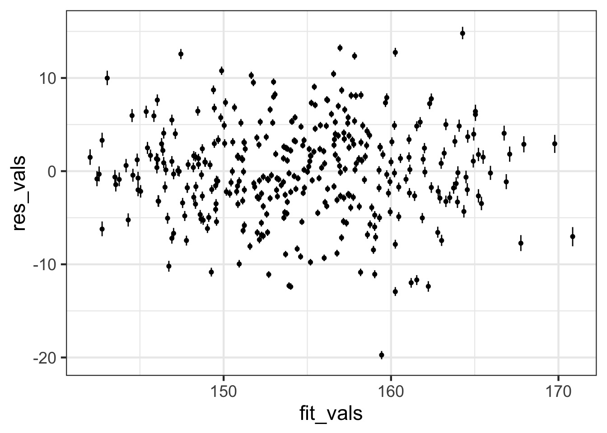
Model Results
Mean StdDev 5.5% 94.5% alpha beta sigma
alpha 113.98 1.90 110.94 117.03 1.00 -0.99 0
beta 0.90 0.04 0.84 0.97 -0.99 1.00 0
sigma 5.07 0.19 4.77 5.38 0.00 0.00 1- Are these meaningful?
- Should you standardize predictors for a meaningful intercept?
- Is this the right interval?
Model Results

Sampling from the Posterior Distribution
alpha beta sigma
1 113.2631 0.9113468 5.447617
2 111.5392 0.9552925 5.374237
3 118.2644 0.8187566 5.204558
4 114.1050 0.9063995 4.928162
5 114.1539 0.9037442 5.189243
6 110.6849 0.9780145 5.147052Posterior!
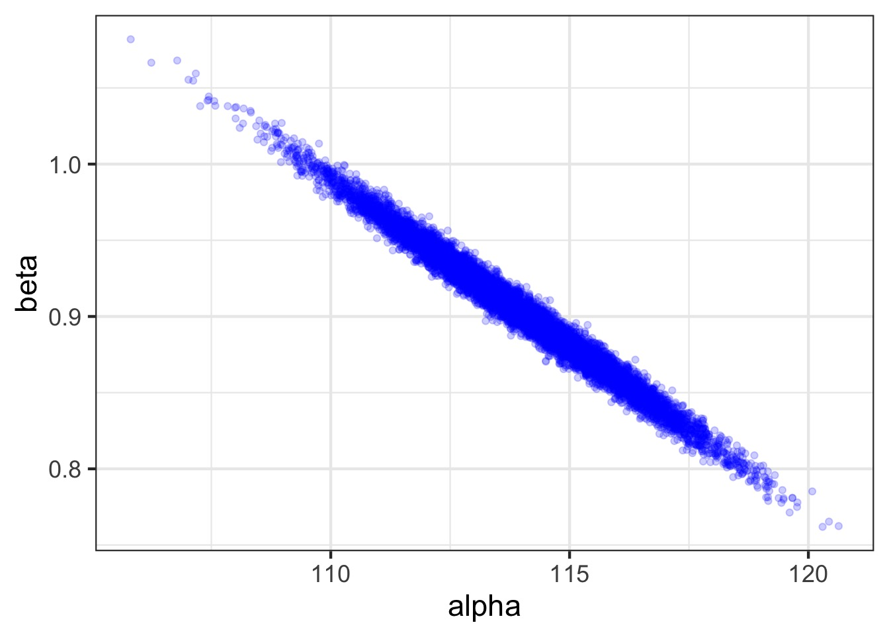
Posterior!
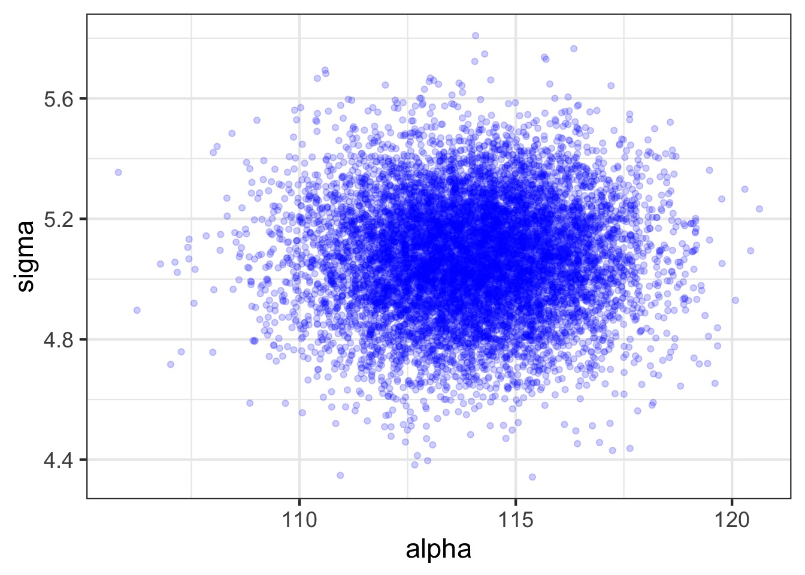
How Well Have we Fit the Data?
How Well Have we Fit the Data?

What about with fit intervals?
#1) Make a fake data frame over the relevant range
pred_df <- data.frame(weight=seq(30,65, length.out=200))
#2) Get the fit values & interval
pred <- link(weight_fit, data=pred_df, refresh=0)
pred_hpdi <- apply(pred, 2, HPDI)
#3) Put it all back together and plot
pred_df <- mutate(pred_df,
height = apply(pred, 2, mean),
lwr_fit = pred_hpdi[1,],
upr_fit = pred_hpdi[2,])What about with fit intervals?
geom_line and geom_ribbon for plotting
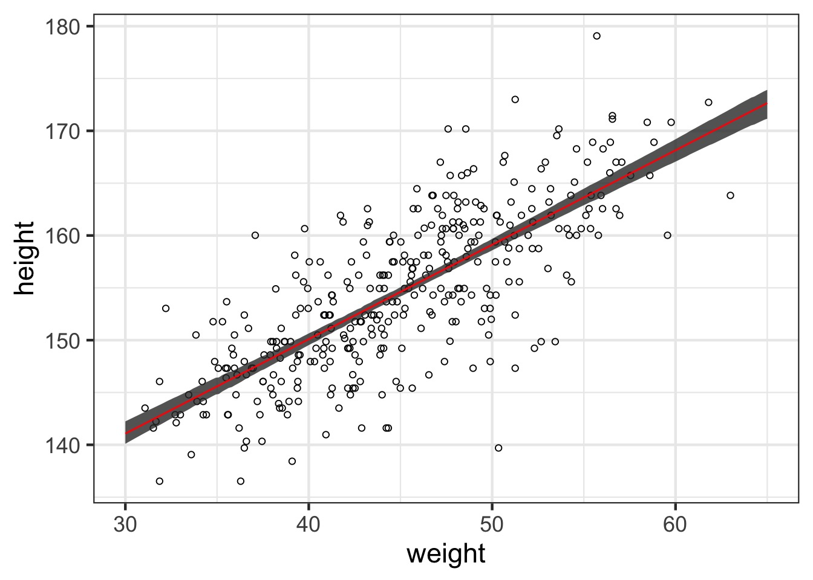
What about prediction intervals?
Prediction Interval
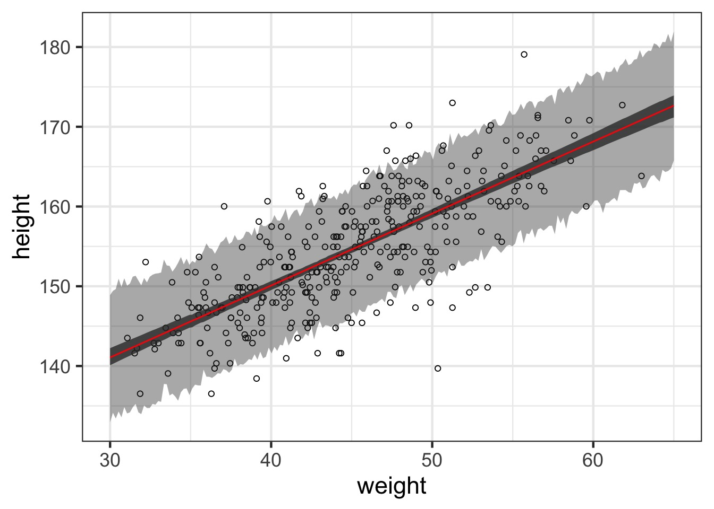
Polynomial Regression and Standardization
The Actual Data
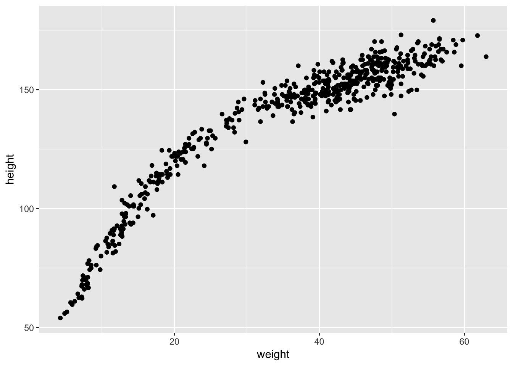
This is not linear
A nonlinear Model
Likelihood:
\(h_i \sim Normal(\mu_i, \sigma)\)
Data Generating Process
\(\mu_i = \alpha + \beta_1 x_i + \beta_2 x_i^2 + \beta_3 x_i^3\)
Prior:
\(\alpha \sim Normal(178, 100)\)
\(\beta_j \sim Normal(0, 10)\)
\(\sigma \sim U(0,50)\)
Before fitting this, Standardize!
- Standardizing a predictor aids in fitting
- Scale issues of different variables
- Scale issues of different variables
- Standardizing yields comparable coefficients
- You don’t have to
- But if you encounter problems, it’s a good fallback
Our Model
Making variables and Fitting
Exercise
- Fit this nonlinear model
- Assess it
- Plot the fit and error
- Feel free to use
linkor the posterior to plot fit error
- Feel free to use
Solution
I hate that x axis
pred_plot +
scale_x_continuous(label = function(x)
round(x*sd(Howell1$weight) + mean(Howell1$weight),1)) +
xlab("Weight")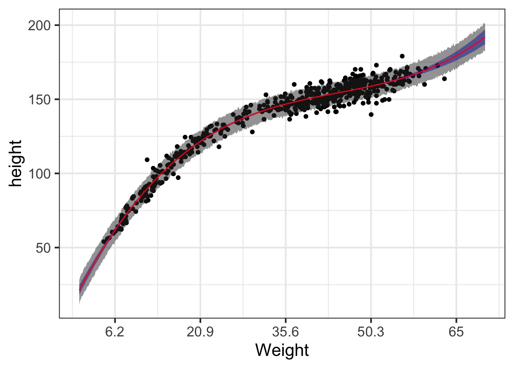